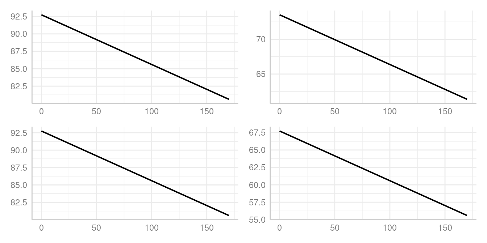

Technical Details: Difference between marginalization methods: the `margin` argument
Daniel Lüdecke
2024-04-03
Source:vignettes/technical_differencepredictemmeans.Rmd
technical_differencepredictemmeans.Rmdpredict_response() computes marginal means or predicted
values for all possible levels or values from specified model’s
predictors (focal terms). These effects are “marginalized” (or
“averaged”) over the values or levels of remaining predictors (the
non-focal terms). The margin argument
specifies the method of marginalization. The following methods are
available:
"mean_reference": non-focal predictors are set to their mean (numeric variables), reference level (factors), or “most common” value (mode) in case of character vectors. Technically, a data grid is constructed, roughly comparable toexpand.grid()on all unique combinations ofmodel.frame(model)[, terms]. This data grid (see [data_grid()]) is used for thenewdataargument ofpredict(). All remaining covariates not specified intermsare held constant: Numeric values are set to the mean, integer values are set to their median, factors are set to their reference level and character vectors to their mode (most common element)."mean_mode": non-focal predictors are set to their mean (numeric variables) or mode (factors, or “most common” value in case of character vectors)."marginalmeans": non-focal predictors are set to their mean (numeric variables) or marginalized over the levels or “values” for factors and character vectors. Marginalizing over the factor levels of non-focal terms computes a kind of “weighted average” for the values at which these terms are hold constant."empirical"(or"counterfactual"): non-focal predictors are marginalized over the observations in your sample, for counterfactual predictions. Technically, predicted values for each observation in the data are calculated multiple times (the data is duplicated once for all unique values of the focal terms), each time fixing one unique value or level of the focal terms and then takes the average of these predicted values (aggregated/grouped by the focal terms).
That means:
For models without categorical predictors, results are usually identical, no matter which
marginoption is selected (except some slight differences in the associated confidence intervals, which are, however, negligible).When all categorical predictors are specified in
termsand further (non-focal) terms are only numeric, results are usually identical, as well.
library(magrittr)
library(ggeffects)
data(efc, package = "ggeffects")
fit <- lm(barthtot ~ c12hour + neg_c_7, data = efc)
# we add margin = "mean_reference" to show that it is the default
predict_response(fit, "c12hour", margin = "mean_reference")
#> # Predicted values of Total score BARTHEL INDEX
#>
#> c12hour | Predicted | 95% CI
#> ----------------------------------
#> 0 | 75.07 | 72.96, 77.19
#> 20 | 70.15 | 68.40, 71.91
#> 45 | 64.01 | 62.40, 65.61
#> 65 | 59.09 | 57.32, 60.86
#> 85 | 54.17 | 52.04, 56.31
#> 105 | 49.25 | 46.64, 51.87
#> 125 | 44.34 | 41.18, 47.49
#> 170 | 33.27 | 28.78, 37.76
#>
#> Adjusted for:
#> * neg_c_7 = 11.83
predict_response(fit, "c12hour", margin = "marginalmeans")
#> # Predicted values of Total score BARTHEL INDEX
#>
#> c12hour | Predicted | 95% CI
#> ----------------------------------
#> 0 | 75.07 | 72.96, 77.19
#> 20 | 70.15 | 68.40, 71.91
#> 45 | 64.01 | 62.40, 65.61
#> 65 | 59.09 | 57.32, 60.86
#> 85 | 54.17 | 52.04, 56.31
#> 105 | 49.25 | 46.64, 51.87
#> 125 | 44.34 | 41.18, 47.49
#> 170 | 33.27 | 28.78, 37.76
#>
#> Adjusted for:
#> * neg_c_7 = 11.83As can be seen, the continuous predictor neg_c_7 is held
constant at its mean value, 11.83. For categorical predictors,
margin = "mean_reference" (the default, and thus not
specified in the above example) and
margin = "marginalmeans" behave differently. While
"mean_reference" uses the reference level of each
categorical predictor to hold it constant, "marginalmeans"
averages over the proportions of the categories of factors.
library(datawizard)
data(efc, package = "ggeffects")
efc$e42dep <- to_factor(efc$e42dep)
# we add categorical predictors to our model
fit <- lm(barthtot ~ c12hour + neg_c_7 + e42dep, data = efc)
predict_response(fit, "c12hour", margin = "mean_reference")
#> # Predicted values of Total score BARTHEL INDEX
#>
#> c12hour | Predicted | 95% CI
#> ----------------------------------
#> 0 | 92.74 | 88.48, 97.01
#> 20 | 91.32 | 87.06, 95.57
#> 45 | 89.53 | 85.20, 93.87
#> 65 | 88.10 | 83.64, 92.57
#> 85 | 86.68 | 82.03, 91.32
#> 105 | 85.25 | 80.37, 90.13
#> 125 | 83.82 | 78.67, 88.98
#> 170 | 80.61 | 74.71, 86.51
#>
#> Adjusted for:
#> * neg_c_7 = 11.83
#> * e42dep = independent
predict_response(fit, "c12hour", margin = "marginalmeans")
#> # Predicted values of Total score BARTHEL INDEX
#>
#> c12hour | Predicted | 95% CI
#> ----------------------------------
#> 0 | 73.51 | 71.85, 75.18
#> 20 | 72.09 | 70.65, 73.53
#> 45 | 70.30 | 68.89, 71.71
#> 65 | 68.87 | 67.29, 70.46
#> 85 | 67.45 | 65.55, 69.34
#> 105 | 66.02 | 63.74, 68.30
#> 125 | 64.59 | 61.88, 67.31
#> 170 | 61.38 | 57.61, 65.15
#>
#> Adjusted for:
#> * neg_c_7 = 11.83In this case, one would obtain the same results for
"mean_reference" and "marginalmeans" again, if
condition is used to define specific levels at which
variables, in our case the factor e42dep, should be held
constant.
predict_response(fit, "c12hour", margin = "mean_reference")
#> # Predicted values of Total score BARTHEL INDEX
#>
#> c12hour | Predicted | 95% CI
#> ----------------------------------
#> 0 | 92.74 | 88.48, 97.01
#> 20 | 91.32 | 87.06, 95.57
#> 45 | 89.53 | 85.20, 93.87
#> 65 | 88.10 | 83.64, 92.57
#> 85 | 86.68 | 82.03, 91.32
#> 105 | 85.25 | 80.37, 90.13
#> 125 | 83.82 | 78.67, 88.98
#> 170 | 80.61 | 74.71, 86.51
#>
#> Adjusted for:
#> * neg_c_7 = 11.83
#> * e42dep = independent
predict_response(
fit,
"c12hour",
margin = "marginalmeans",
condition = c(e42dep = "independent")
)
#> # Predicted values of Total score BARTHEL INDEX
#>
#> c12hour | Predicted | 95% CI
#> ----------------------------------
#> 0 | 92.74 | 88.48, 97.01
#> 20 | 91.32 | 87.06, 95.57
#> 45 | 89.53 | 85.20, 93.87
#> 65 | 88.10 | 83.64, 92.57
#> 85 | 86.68 | 82.03, 91.32
#> 105 | 85.25 | 80.37, 90.13
#> 125 | 83.82 | 78.67, 88.98
#> 170 | 80.61 | 74.71, 86.51
#>
#> Adjusted for:
#> * neg_c_7 = 11.83Another option is to use
predict_response(margin = "empirical") to compute
“counterfactual” adjusted predictions. This function is a wrapper for
the avg_predictions()-method from the
marginaleffects-package. The major difference to
margin = "marginalmeans" is that estimated marginal means,
as computed by "marginalmeans", are a special case of
predictions, made on a perfectly balanced grid of categorical
predictors, with numeric predictors held at their means, and
marginalized with respect to some focal variables.
predict_response(margin = "empirical"), in turn, calculates
predicted values for each observation in the data multiple times, each
time fixing the unique values or levels of the focal terms to one
specific value and then takes the average of these predicted values
(aggregated/grouped by the focal terms) - or in other words: the whole
dataset is duplicated once for every unique value of the focal terms,
makes predictions for each observation of the new dataset and take the
average of all predictions (grouped by focal terms). This is also called
“counterfactual” predictions.
predict_response(fit, "c12hour", margin = "empirical")
#> # Average predicted values of Total score BARTHEL INDEX
#>
#> c12hour | Predicted | 95% CI
#> ----------------------------------
#> 0 | 67.73 | 66.15, 69.31
#> 20 | 66.30 | 65.03, 67.57
#> 45 | 64.52 | 63.38, 65.66
#> 65 | 63.09 | 61.81, 64.37
#> 85 | 61.66 | 60.07, 63.25
#> 105 | 60.23 | 58.24, 62.23
#> 125 | 58.81 | 56.37, 61.25
#> 170 | 55.59 | 52.08, 59.11To explain how margin = "empirical" works, let’s look at
following example. The confidence intervals for the simple means differ
from those of predict_response(), however, the predicted
and mean values are identical.
data(iris)
set.seed(123)
# create an unequal distributed factor, used as focal term
iris$x <- as.factor(sample(1:4, nrow(iris), replace = TRUE, prob = c(0.1, 0.2, 0.3, 0.4)))
m <- lm(Sepal.Width ~ Species + x, data = iris)
# average predicted values
predict_response(m, "x", margin = "empirical")
#> # Average predicted values of Sepal.Width
#>
#> x | Predicted | 95% CI
#> --------------------------
#> 1 | 3.12 | 2.94, 3.31
#> 2 | 3.11 | 2.99, 3.23
#> 3 | 2.97 | 2.87, 3.06
#> 4 | 3.09 | 3.00, 3.17
# replicate the dataset for each level of "x", i.e. 4 times
d <- do.call(rbind, replicate(4, iris, simplify = FALSE))
# for each data set, we set our focal term "x" to one of the four unique values
d$x <- as.factor(rep(1:4, each = 150))
# we calculate predicted values for each "dataset", i.e. we predict our outcome
# for observations, for all levels of "x"
d$predicted <- predict(m, newdata = d)
# now we compute the average predicted values for each level of "x"
datawizard::means_by_group(d, "predicted", "x")
#> # Mean of predicted by x
#>
#> Category | Mean | N | SD | 95% CI | p
#> ----------------------------------------------------
#> 1 | 3.12 | 150 | 0.28 | [3.08, 3.17] | 0.017
#> 2 | 3.11 | 150 | 0.28 | [3.07, 3.16] | 0.059
#> 3 | 2.97 | 150 | 0.28 | [2.92, 3.01] | < .001
#> 4 | 3.09 | 150 | 0.28 | [3.04, 3.13] | 0.468
#> Total | 3.07 | 600 | 0.28 | |
#>
#> Anova: R2=0.048; adj.R2=0.044; F=10.094; p<.001But when should I use which margin
option?
When you are interested in the strength of association, it usually
doesn’t matter. as you can see in the plots below. The slope of our
focal term, c12hour, is the same for all four plots:
library(see)
predicted_1 <- predict_response(fit, terms = "c12hour")
predicted_2 <- predict_response(fit, terms = "c12hour", margin = "marginalmeans")
predicted_3 <- predict_response(fit, terms = "c12hour", margin = "marginalmeans", condition = c(e42dep = "independent"))
predicted_4 <- predict_response(fit, terms = "c12hour", margin = "empirical")
p1 <- plot(predicted_1, show_ci = FALSE, show_title = FALSE, show_x_title = FALSE, show_y_title = FALSE)
p2 <- plot(predicted_2, show_ci = FALSE, show_title = FALSE, show_x_title = FALSE, show_y_title = FALSE)
p3 <- plot(predicted_3, show_ci = FALSE, show_title = FALSE, show_x_title = FALSE, show_y_title = FALSE)
p4 <- plot(predicted_4, show_ci = FALSE, show_title = FALSE, show_x_title = FALSE, show_y_title = FALSE)
plots(p1, p2, p3, p4, n_rows = 2)
However, the predicted outcome varies. This gives an impression when
margin = "marginalmeans", i.e. marginal effects,
matter: when you want to predict your outcome, marginalized over the
different levels of factors, i.e. “generalized” to the population (of
your sample) on a balanced grid of focal terms.
margin = "mean_reference" would give a predicted outcome
for a subgroup (or: specific group) of your sample,
i.e. conditioned on specific levels of factors. Hence, the predicted
outcome does not necessarily generalize to the “population” (always
keeping in mind that we assume having a “representative sample” of a
“population” as data in our model). Finally,
margin = "empirical" gives you predictions averaged across
your sample and aggregated by the focal terms, and probably reflects
your data most realistically.
What is the most apparent difference from
margin = "empirical" to the other options?
The most apparent difference from margin = "empirical"
compared to the other methods occurs when you have categorical
co-variates (non-focal terms) with unequally distributed
levels. margin = "marginalmeans" will “average” over the
levels of non-focal factors, while margin = "empirical"
will average over the observations in your sample.
Let’s show this with a very simple example:
data(iris)
set.seed(123)
# create an unequal distributed factor, used as non-focal term
iris$x <- as.factor(sample(1:4, nrow(iris), replace = TRUE, prob = c(0.1, 0.2, 0.3, 0.4)))
m <- lm(Sepal.Width ~ Species + x, data = iris)
# predicted values, conditioned on x = 1
predict_response(m, "Species")
#> # Predicted values of Sepal.Width
#>
#> Species | Predicted | 95% CI
#> -----------------------------------
#> setosa | 3.50 | 3.30, 3.69
#> versicolor | 2.84 | 2.63, 3.04
#> virginica | 3.04 | 2.85, 3.23
#>
#> Adjusted for:
#> * x = 1
# predicted values, conditioned on weighted average of x
predict_response(m, "Species", margin = "marginalmeans")
#> # Predicted values of Sepal.Width
#>
#> Species | Predicted | 95% CI
#> -----------------------------------
#> setosa | 3.45 | 3.35, 3.54
#> versicolor | 2.78 | 2.68, 2.89
#> virginica | 2.99 | 2.89, 3.09
# average predicted values, averaged over the sample and aggregated by "Species"
predict_response(m, "Species", margin = "empirical")
#> # Average predicted values of Sepal.Width
#>
#> Species | Predicted | 95% CI
#> -----------------------------------
#> setosa | 3.43 | 3.34, 3.52
#> versicolor | 2.77 | 2.67, 2.86
#> virginica | 2.97 | 2.88, 3.07There is no rule of thumb which approach is better; it depends on the characteristics of the sample and the population to which should be generalized. Consulting the marginaleffects-website might help to decide which approach is more appropriate.
Showing the difference between "marginalmeans"
and "empirical"
A code example, where we compute the average predicted values the estimated marginal means manually, shows the differences between these two ways of averaging in detail.
data(iris)
set.seed(123)
iris$x <- as.factor(sample(1:4, nrow(iris), replace = TRUE, prob = c(0.1, 0.2, 0.3, 0.4)))
m <- lm(Sepal.Width ~ Species + x, data = iris)
# average predicted values
predict_response(m, "Species", margin = "empirical")
#> # Average predicted values of Sepal.Width
#>
#> Species | Predicted | 95% CI
#> -----------------------------------
#> setosa | 3.43 | 3.34, 3.52
#> versicolor | 2.77 | 2.67, 2.86
#> virginica | 2.97 | 2.88, 3.07
# replicate the dataset for each level of "Species", i.e. 3 times
d <- do.call(rbind, replicate(3, iris, simplify = FALSE))
# for each data set, we set our focal term to one of the three levels
d$Species <- as.factor(rep(levels(iris$Species), each = 150))
# we calculate predicted values for each "dataset", i.e. we predict our outcome
# for observations, for all levels of "Species"
d$predicted <- predict(m, newdata = d)
# now we compute the average predicted values by levels of "Species"
datawizard::means_by_group(d, "predicted", "Species")
#> # Mean of predicted by Species
#>
#> Category | Mean | N | SD | 95% CI | p
#> ------------------------------------------------------
#> setosa | 3.43 | 150 | 0.06 | [3.42, 3.44] | < .001
#> versicolor | 2.77 | 150 | 0.06 | [2.76, 2.78] | < .001
#> virginica | 2.97 | 150 | 0.06 | [2.96, 2.98] | < .001
#> Total | 3.06 | 450 | 0.28 | |
#>
#> Anova: R2=0.951; adj.R2=0.951; F=4320.998; p<.001
# estimated marginal means, in turn, differ from the above, because they are
# averaged across balanced reference grids for all focal terms, thereby non-focal
# are hold constant at a "weighted average".
# estimated marginal means, from `ggemmeans()`
predict_response(m, "Species", margin = "marginalmeans")
#> # Predicted values of Sepal.Width
#>
#> Species | Predicted | 95% CI
#> -----------------------------------
#> setosa | 3.45 | 3.35, 3.54
#> versicolor | 2.78 | 2.68, 2.89
#> virginica | 2.99 | 2.89, 3.09
d <- rbind(
data_grid(m, "Species", condition = c(x = "1")),
data_grid(m, "Species", condition = c(x = "2")),
data_grid(m, "Species", condition = c(x = "3")),
data_grid(m, "Species", condition = c(x = "4"))
)
d$predicted <- predict(m, newdata = d)
# means calculated manually
datawizard::means_by_group(d, "predicted", "Species")
#> # Mean of predicted by Species
#>
#> Category | Mean | N | SD | 95% CI | p
#> -----------------------------------------------------
#> setosa | 3.45 | 4 | 0.07 | [3.36, 3.53] | < .001
#> versicolor | 2.78 | 4 | 0.07 | [2.70, 2.87] | < .001
#> virginica | 2.99 | 4 | 0.07 | [2.91, 3.07] | 0.019
#> Total | 3.07 | 12 | 0.30 | |
#>
#> Anova: R2=0.952; adj.R2=0.941; F=88.566; p<.001When should I use which margin
option?
The strength of the association should not be affected by the way of averaging. You can see this when comparing the differences between the predicted values, which are the same. If you’re interested in differences between specific levels (or values) of your predictors, it shouldn’t matter which function you use.
What is different is the predicted outcome, and therefore
the conclusions you would draw from the results.
margin = "mean_reference" or
margin = "mean_mode" predict your outcome for certain
characteristics of your sample (for “subgroups”, if you like).
margin = "empirical" and
margin = "marginalmeans" predict your outcome for an
“average observation” of your sample, with slightly different approaches
of averaging.
# check that the difference between the predicted value, average predicted values
# estimated marginal means is the same
out1 <- predict_response(m, "Species", margin = "empirical")
out2 <- predict_response(m, "Species", margin = "marginalmeans")
out3 <- predict_response(m, "Species", margin = "mean_reference")
all.equal(diff(out1$predicted), diff(out2$predicted))
#> [1] TRUE
all.equal(diff(out1$predicted), diff(out3$predicted))
#> [1] TRUESome models are not yet supported by the emmeans
package, thus, for certain models, only "mean_reference"
works, not "marginalmeans". "empirical" should
support the same (or more) models as "mean_reference", but
averages predictions from the sample, and thus may not be the quantity
of interest. Sometimes, robust variance-covariance estimation is
required for confidence intervals of predictions. In such cases, you
have to rely on "mean_reference" or
"empirical". If you have no categorical predictors as
non-focal terms (i.e. no factor needs to be held constant), then - as
shown above - "mean_reference" and
"marginalmeans" yield the same results.